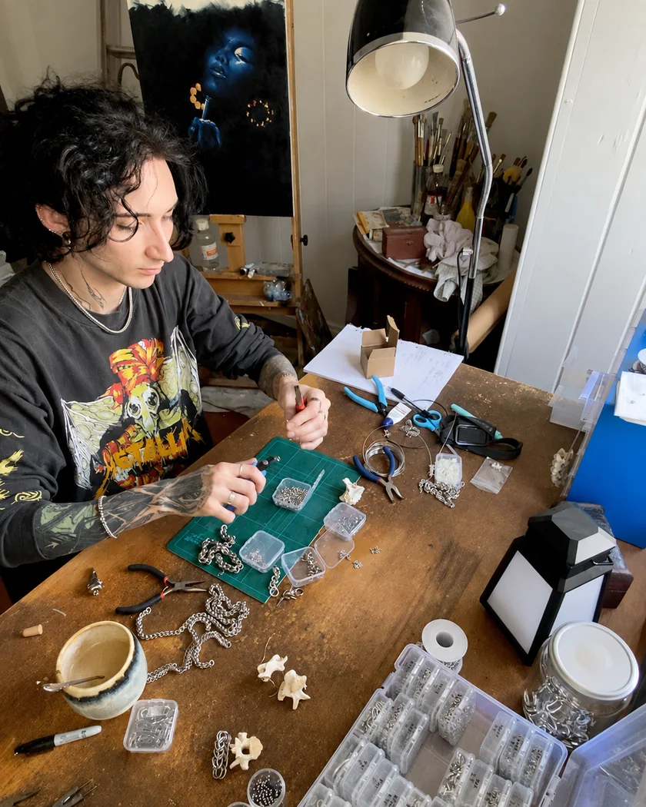

One pair of hands.
Each piece designed to show the world who you are.
To fit into your life seamlessly.
Gloamweald is a one-person chainmail project made in Brisbane, Australia.
Gloam + weald
A name from the forest edge.
GloamDusk or twilight.WealdAn old word for woodland.
Gloamweald sits somewhere between myth and nature, worked metal and weathered bone, beauty and something slightly uncanny.
There is a little wield, a little weld and just enough weird in the name, too.
The icon is the skull of a many-eyed raven. Its six eyes watch over us, seeing through time and across worlds. Sometimes, this raven will bring me shiny new ideas from a realm I have only ever seen in my dreams.
About Gloamweald
Dark, tactile jewellery and accessories.
Gloamweald is a one-person chainmail studio based in Meanjin/Brisbane, Australia.
I make dark, tactile jewellery and accessories from stainless steel, sometimes joined with stone, bone and other carefully chosen materials. Each piece is built by hand, one ring at a time.
I began Gloamweald because I wanted jewellery that felt substantial: pieces with the structure of armour, the character of an artefact and the durability to become part of everyday life.
This is slow, small-scale work. Every ring is opened, linked, checked and closed by hand. No assembly line and no invented workshop in the woods — just pliers, patience and one person at a bench.

Each piece I make with care and attention, breathing life into them. As a boy, growing up I would escape into fantastical worlds full of magic, faeries, knights, and dragons. As an adult, I have found the freedom to create my own world, and I breathe life into these fantasies through these chainmail pieces.
You may notice some pieces have a ‘Lore’ button available. To me, the Gloamweald is more than just a brand — it is a dark, mythical forest, thick and tangled, occupying a shifting space in a world where anything could happen. Sometimes a piece will have a small story or tale attached to it; you may choose to claim this story for your piece from the gloamweald, or you could give it your very own.
Or perhaps, like the many-eyed raven, you too may simply pick it up because it is shiny, and you need another brightly shining piece for your collection.
At the bench
Ring by ring.
- 01
Chosen
Rings, findings, and natural materials selected for their finish, feel, strength, and suitability for the piece.
- 02
Linked
Every weave assembled by hand, with its tension, flexibility and movement checked as it grows. Each piece is finished with a unique combination of rings and connections to achieve each unique custom measurement and details.
- 03
Finished
Each piece is tumbled to ensure a smooth finish, before natural materials are firmly secured into place. Every closure, edge and connection is checked before the piece leaves the bench.